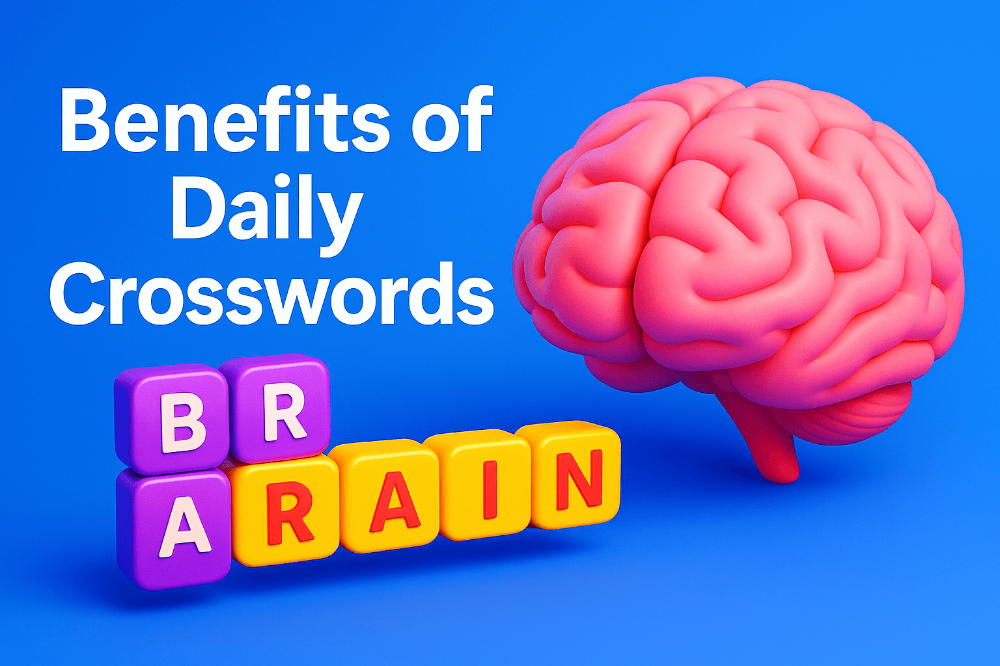

Science-backed mental exercise

Crossword puzzles aren’t just fun; they are a powerful workout for the brain. Multiple cognitive processes are activated at once:
Studies have shown that people who regularly solve word puzzles perform better in cognitive tests compared to those who don’t.
Matching clues with the right word requires active use of both short-term and long-term memory. It strengthens neural connections and supports better recall.
Daily practice leads to noticeable memory improvements.
Crosswords introduce you to new words and phrases every day. Over time, this significantly enriches your vocabulary and improves everyday communication skills.
Solving a puzzle requires deep concentration. This reinforces the brain’s ability to stay focused for longer periods and with greater accuracy.
By shifting your attention away from daily worries, crossword puzzles act like a calming mental escape. They can help lower stress and boost relaxation.
Neuroscience research shows that mental challenges can help slow age-related cognitive decline.
Crosswords keep the brain active and resilient as we grow older.
WordSaga Crossword is a fun way to make brain training a daily habit. Each puzzle helps improve memory, focus, and mental agility — while offering an enjoyable gaming experience.
Crossword puzzles are more than entertainment — they are a science-backed tool for boosting cognitive health. With WordSaga Crossword, you can keep your brain sharp and enjoy daily mental challenges anytime you want.